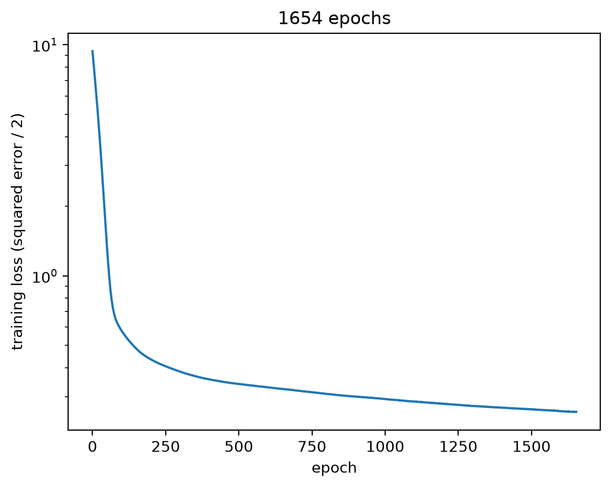

Training
The weights start random. Gradient descent computes how the training error changes with each weight and moves every weight a small step in the direction that lowers it. Backpropagation is the bookkeeping that gets all these slopes in one pass. One pass over the data is an epoch.